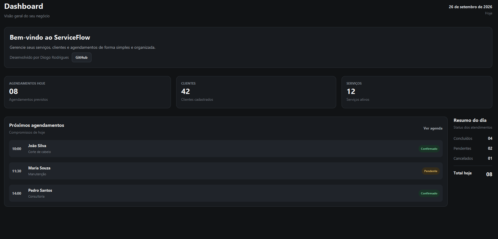
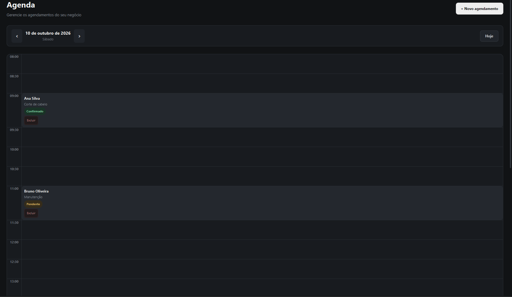
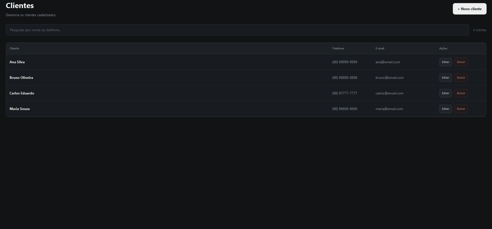

Transformar tarefas em um fluxo mais claro.
Facilitar a visualização e a organização de informações relacionadas a serviços, clientes e agendamentos em um ambiente centralizado.
O ServiceFlow é um projeto de aplicação desktop pensado para organizar serviços, clientes e agendamentos em uma experiência clara e centralizada.
Acompanhe as informações do sistema.
Uma representação visual da proposta do ServiceFlow.
O ServiceFlow nasceu como um projeto de desenvolvimento de software com uma proposta direta: reunir rotinas de gerenciamento em uma aplicação desktop organizada e fácil de compreender.
Facilitar a visualização e a organização de informações relacionadas a serviços, clientes e agendamentos em um ambiente centralizado.
Conectar áreas importantes da rotina em uma estrutura consistente, com navegação direta e atenção à experiência de uso.
Desenvolver habilidades de programação, organização de código, resolução de problemas e design de interfaces.
O projeto contempla áreas para apoiar o gerenciamento cotidiano. A disponibilidade de cada recurso depende do estágio atual de implementação.
Visão geral para reunir informações importantes e facilitar o acompanhamento.
Área dedicada à organização e ao acompanhamento dos agendamentos.
Estrutura para manter os dados dos clientes organizados.
Organização das informações e dos cadastros de serviços.
Área prevista para organizar informações dos profissionais.
Consulta de informações e acompanhamento dos registros.
Os recursos descrevem as áreas do projeto; nem todos necessariamente estão finalizados.
Mostre a interface real do programa com capturas de tela do dashboard, da agenda e dos cadastros.



O ServiceFlow utiliza tecnologias voltadas à lógica da aplicação, à construção de interfaces desktop e à organização do projeto.
Conheça o desenvolvimentoPlanejamento · Código · Evolução
Atualmente, o ServiceFlow é desenvolvido individualmente por Diogo. Da implementação à evolução da interface, o projeto representa uma jornada de aprendizado, experimentação e aprimoramento contínuo.
Construir uma aplicação útil e evoluir tecnicamente a cada etapa do desenvolvimento.
Esta página apresenta a proposta, as tecnologias e o processo por trás do ServiceFlow. Acompanhe sua evolução e conheça as próximas etapas do projeto.
Se o repositório tiver sido removido ou renomeado, atualize o link no HTML.